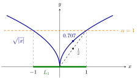

Quasi-Convex Function¶
Definition¶
Let be a convex set and let . The function is quasi-convex if the sublevel set
is convex for every .
Equivalently, for all and every : take in one direction, and in the other note that for in a sublevel set the maximum is at most .
Interpretation¶
A quasi-convex function keeps exactly one property of convex functions: all its sublevel sets are convex. Along any segment its values never rise above the larger of the two endpoint values, so it has no hump in the middle of a segment, but its graph may bend in any way.

The figure is Example 2 below, . At level the sublevel set is , the green interval, and every gives an interval , so is quasi-convex. It is not convex: the chord from to has height at , below .
The max-inequality shows how much weaker this is than convexity. A convex function stays below the weighted average , which is at most the maximum, so every convex function is quasi-convex. The converse fails badly. Every monotone function on an interval is quasi-convex, because its sublevel sets are intervals; this includes and a step function. A step function is not even continuous, so the continuity of convex functions has no quasi-convex counterpart.
Operations behave differently too. A maximum of quasi-convex functions is quasi-convex, because its sublevel set is the intersection of their sublevel sets. A sum need not be (Example 4 below), whereas for convex functions sums are safe. A common misconception is to treat quasi-convex functions like convex ones in this respect.
A locally strict maximum gives a quick way to exclude quasi-convexity. If has a locally strict maximum at a point of an open domain, take close to for a direction : both have smaller values than , but their midpoint does not, so a sublevel set is not convex. The set of minimizers of a quasi-convex function turns out to be convex.
Key Results¶
- is quasi-convex if and only if for all and .
- Every convex function is quasi-convex (Example 1 below); the converse is false (Example 2 below).
- If are quasi-convex on , then is quasi-convex.
- On an interval , every nondecreasing or nonincreasing function is quasi-convex, since each sublevel set is an interval or empty.
- If is open and has a locally strict maximum, then is not quasi-convex. Hence on an open domain a function with both a locally strict maximum and a locally strict minimum is neither quasi-convex nor quasi-concave.
- A sum of quasi-convex functions need not be quasi-convex.
Examples¶
1. A square root. The function on is convex, hence quasi-convex. Let on . Since is increasing with , its sublevel sets are
all of them convex; for example . So is quasi-convex. In fact is also convex, but the interval argument does not need this.
2. Quasi-convex but not convex. For on the sublevel sets are for and otherwise, so is quasi-convex; it is not convex, since . The step function for and for is nondecreasing, hence quasi-convex, although it is discontinuous at the interior point .
3. A maximum. The functions and on are quasi-convex: their sublevel sets are the half-planes and , with the real cube root. Their maximum has as sublevel sets the quadrants , which are convex. Yet is not convex: , while the average of and is .
4. A sum that is not quasi-convex. The functions and are monotone on , hence quasi-convex, but has
which is not convex. This matches the locally strict maximum test: has a locally strict maximum and a locally strict minimum on the open domain .
Prerequisites¶
Related Concepts¶
- Quasi-Concave Function
- Operations Preserving Convexity of Functions
- Continuity of Convex Functions
- Set of Minimizers of a Quasi-Convex Function
- Minimum Characterized by Separation
- Supporting Hyperplanes from Gradients
- Level Set and Level Curve
Sources¶
- Math VI: Convexity and Optimization · Week 1
- H. E. Nusse and M. Dienstknecht, Math VI: Convexity and Optimization, lecture notes 2026–2027, Section 1.3
Aliases: quasiconvex function, quasi-convexity, quasiconvexity Keywords: {\boldsymbol{x}\in D\colon f(\boldsymbol{x})\leq\alpha}\text{ convex for every }\alpha\in\mathbb{R}, f(\lambda\boldsymbol{a}+(1-\lambda)\boldsymbol{b})\leq\max{f(\boldsymbol{a}),f(\boldsymbol{b})}, M_f(\boldsymbol{x})=\max{f_k(\boldsymbol{x})\colon k=1,\dots,N}, convex implies quasi-convex, monotone functions are quasi-convex, convex sublevel sets Symbols: alpha, element of, epsilon, infinity, lambda, real numbers, square root, subset, union
Last updated: 5 November 2026 12:47
Quasi-Convex FunctionMinimum Characterized by SeparationQuasi-Concave FunctionSet of Minimizers of a Quasi-Convex FunctionSupporting Hyperplanes from GradientsSublevel Sets of Convex FunctionsConvex Set in R^nConvex and Concave Functions on R^nMonotone FunctionOperations Preserving Convexity of FunctionsContinuity of Convex FunctionsLevel Set and Level Curve